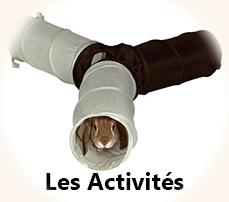
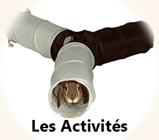

L'Hygiène
Introduction
Certaines zones nécessitent des soins ou du moins une surveillance régulière : appareil génital, oreilles, griffes et bien sûr la fourrure.
La Fourrure
S'il est vraiment très sale vous pouvez le nettoyer avec du shampoing pour animaux, utilisez de l'eau tiède et rincez minutieusement. Ne faites pas prendre de bain à votre lapin, mouillez uniquement la région souillée. Essuyez-le bien et enveloppez-le dans une serviette tiède pour qu'il n'attrape pas froid.
Le lapin angora nécessite un brossage quotidien pour éviter la formation de noeuds impossibles à déméler. C'est un travail fastidieux, il faut donc bien y penser avant d'adopter un lapin à poils longs.
L'été le lapin angora souffre de la chaleur et une petite coupe d'été est la bienvenue.
Les Griffes
L'idéal est de se mettre dans un endroit très lumineux pour essayer de voir la veine à travers la griffe et s'assurer qu'on ne coupe pas trop loin. On peut aussi utiliser une lampe que l'on place derrière la griffe. Si vous avez un doute, coupez le moins possible.
Si vous avez coupé trop court et que la griffe saigne, appliquez de la poudre hémostatique ou à défaut de la farine ou de la fécule de maïs, mais ne mouillez pas.
Il se peut aussi que votre lapin se casse ou s'arrache une griffe, en général elle repousse très bien il ne faut pas vous inquiéter. En cas de doute et s'il y a des signes d'infection consultez un vétérinaire.
Le rythme de coupe des griffes varie selon le sol sur lequel vit le lapin et ses activités physiques, plus il bouge et sort, plus il use ses griffes.
Les Oreilles
Si un nettoyage est nécessaire, votre vétérinaire vous prescrira une solution auriculaire.
Un nettoyage de l'oreille s'effectue en 3 étapes :
- On dépose la solution dans le conduit (lorsque vous regardez l'intérieur de l'oreille, vous devez voir 2 "trous", c'est dans celui le plus proche du corps et pas dans celui proche du nez qu'il faut mettre le produit),
- On masse la base de l'oreille pour décoller les saletés( Vous devez entendre des petits "floc floc") et on récupère ce qui remonte soit avec un coton tige (si c'est dans un petit recoin à l'extérieur du conduit), soit à l'aide d'une compresse.
Dès la fin du massage le lapin va secouer la tête se qui va permettre d'évacuer des saletés. On termine en essuyant bien l'oreille. Si l'oreille est infectée le vétérinaire peut aussi prescrire une suspension pour instillation auriculaire.
Il ne faut jamais introduire de coton tige dans le conduit du lapin, seul le vétérinaire peut effectuer, si besoin, un nettoyage plus profond. N'hésitez pas à lui demander une démonstration.
Les dents
Il faut alors limer ou couper les dents voir dans les cas extrêmes les arracher. Vous ne pouvez pas soigner vous même des dents à problème mais vous pouvez surveiller leur longueur , leur propreté et la propreté de la bouche.
Si le lapin a des restes d'aliments coincés entre les dents, de la bave ou de salissures sur les commissures, c'est qu'il y a un petit souci. Il faut alors consulter le vétérinaire. Lorsque vous inspectez les dents pensez à vérifier aussi qu'il n'y a pas de boules le long de la mâchoire car les lapins peuvent aussi faire des abcès dentaires.
Un lapin en bonne santé n'a besoin d'aucun soin dentaire juste d'une surveillance régulière. Il est inutile de leur brosser les dents, mais vous pouvez vérifier que rien n'est coincé si votre lapin a l'habitude de grignoter des tapis ou tissus par exemple.
L'appareil génital
Pour pouvoir appliquer les divers traitement, il est recommandé de couper les poils au maximum ou même de tondre ( Attention ce geste est à réaliser par une main experte!!) En cas de souillure importante par l'urine ou une diarrhée un bain de siège est indiqué.